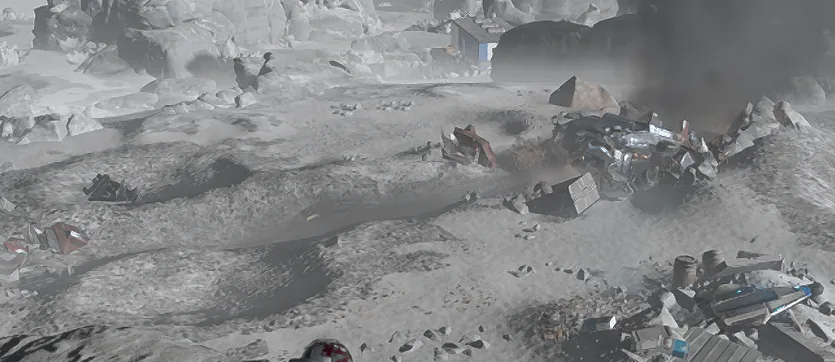
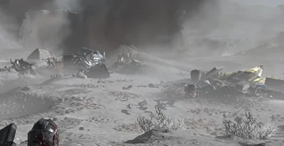
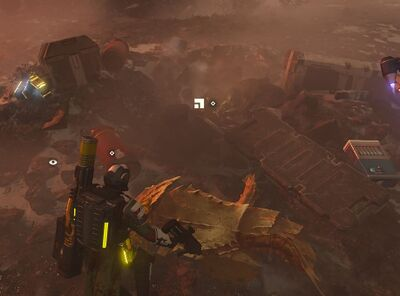

坠毁飞船
 Crashed Ship
Crashed Ship
基本信息 信息
阵营
Human/机器人
描述
the 坠毁飞船 is a 中型 human/机器人 建筑.
坠毁飞船是一种中型人类/机器人建筑，可在任务中发现。根据行星是否为机器人控制，它可能是带有机器人残骸的机器人飞船，也可能是带有船长日志的人类飞船。
Minor Point of Interest
| Variation | 图像 | 目录 | 备注 |
|---|---|---|---|
| Pod |  |
At the Outcrop:
At the Wake:
|
|
| 稀有样本 |  |
At the Wake:
|